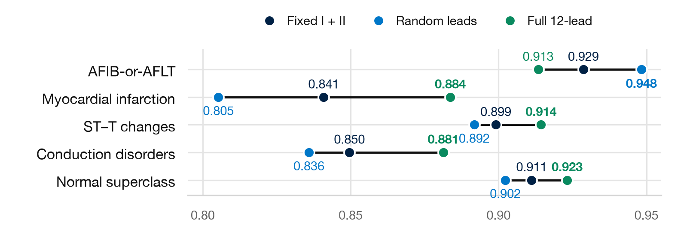

When can two-lead ECG be trusted?
What we built, what we measured, and what it actually means — in plain language.
Short version. We trained three matching neural networks — one that always sees leads I + II, one that sees a random subset of leads each time, and one that sees all 12 — plus kept an older reference model. Tested on two-lead inputs, no training strategy wins everywhere: fixed I + II ranks most diagnoses slightly better, random-lead training keeps the best atrial-fibrillation ranking. But good ranking wasn't enough: under a strict rule that accepted rule-outs must contain at most 2% missed disease (statistically proven, not just observed), every model abstained on every patient. Loosening the rule to 3–5% automates most patients but misses 8–21% of real AFIB/AFLT cases. The bottleneck is proof, not accuracy — and the proof needs far more data than we have.
01The question in one paragraph
Portable heart monitors that record only two ECG leads (I and II — essentially two viewpoints on the heart's electrical activity) could bring screening to places where a full 12-lead machine is impractical. The trap: a model can have a high average score while still being unsafe for specific decisions. So instead of asking "how accurate is two-lead ECG?", we asked a harder, practical question: can leads I + II rule out atrial fibrillation or flutter (AFIB/AFLT) while keeping the error among cleared patients below 2%? And crucially, the system is allowed to say "I don't know" — escalate to a full 12-lead recording, or on to a human expert.
02The data and how it was split
All experiments use PTB-XL, a public hospital ECG collection: 21,799 ten-second, 12-lead recordings from 18,869 patients, each sampled 100 times per second (12 × 1,000 numbers per ECG), with expert labels for 61 diagnoses [1]. The most important design choice is that no patient appears in more than one split — otherwise the model could simply memorize people instead of learning heart disease.
| Folds | Role | Size |
|---|---|---|
| 1–7 | Fit the network weights | — |
| 8 | Pick the best checkpoint | — |
| 9 | Calibrate probabilities, choose thresholds, fit rescue (971 + 485 + 486 patients) | 1,942 patients |
| 10 | Final audit (one ECG per patient; 118 AFIB/AFLT cases) | 2,198 ECGs · 1,904 patients |
Why split at all? A network with 9.8 million knobs can memorize its training ECGs the way a student memorizes past papers — perfect scores, zero understanding. The only honest exam is one it has never seen. So the data is carved into roles, and information flows in one direction only: every decision must be made with no knowledge of the later stages.
Fit (folds 1–7): studying. Gradient descent tunes the weights over 50 passes. The model is free to memorize here — that is expected, not cheating.
Select (fold 8): the mock exam. Training produces 50 candidate models, one per epoch, and training loss keeps improving long after real ability peaks and slides into overfitting. So after each epoch, every checkpoint is scored on fold 8 — unseen patients — by superclass macro-AUC (average ranking across the five main diagnosis groups, each counting equally, on each model's own lead set), and only the best snapshot is kept. Fold 8 answers exactly one question: "which epoch generalized best?" It must be separate from the fitting folds (otherwise it rewards memorization) and from everything after it (otherwise later choices leak into the pick).
Calibrate and decide (fold 9, three separate patient groups): rehearsing the rules. 971 patients remap scores into honest probabilities; a different 485 pick the 2-lead cutoffs; a third group fits the rescue on referred cases only. Each step is judged on strangers — reusing the same patients would let every step flatter the one before it.
Audit (fold 10): the real exam, taken once. Frozen model, frozen cutoffs, one ECG per patient, no tuning allowed. Whatever comes out — even 0% automation — is the result.
What breaks the chain? Training on folds 1–8 after using 8 to select would leak the winner's answers into the textbook (explicitly forbidden in the protocol). And the historical model was selected on fold 9 with its test results already inspected — an exam seen in advance — which is exactly why every fold-10 number here is labeled exploratory.
One caution that runs through everything below: fold 10 had already been looked at during earlier development, and only one training seed (42) is finished. That makes every number on the poster exploratory — a feasibility signal, not a validated claim.
03The models: what was trained and how they differ
This is the part the poster compresses. Four models appear in the analysis. Three were trained fresh in a matched comparison — same network, same data, same 50-epoch budget, same random seed (42) — differing in only one thing: which leads they were allowed to see during training. The fourth is an older reference.
| Model | Sees in training | Tested on | Role |
|---|---|---|---|
| Fixed I + II (new) | Always leads I + II | I + II | Specialist: the honest estimate of what two leads can do |
| Random leads (new) | A different random subset (≥2 leads) every sample | I + II | Generalist: never knows which leads it will get |
| Fixed 12-lead (new) | All 12 leads | Full 12 (rescue) · or masked to I + II (mismatch probe) | Second opinion on referred cases; masked version tests missing-input damage |
| Historical (older recipe) | 12 leads, older settings | 12 and I + II | Reference point, not a matched comparator |
The shared training recipe
- Same network for all three new models (details in §04), predicting all 61 diagnoses at once: 5 superclasses (e.g. infarction, conduction disorders, normal), 44 fine-grained sub-diagnoses, 12 rhythm labels.
- 50 passes over the training folds (epochs), batch size 64, learning rate 0.0001 — deliberately modest, identical settings.
- Weighted loss: rare diseases count proportionally more during training, so the network can't ignore them in favor of common ones.
- No auxiliary lead-presence loss in the matched comparison, so the only difference between the fixed and random models is which leads they saw.
- Random-lead training drops a random 0–10 leads from every training sample (always keeping at least 2), forcing the network to read whatever it gets.
- Masking (evaluation only, no retraining): hiding 10 of 12 leads from the 12-lead-trained model at test time, to simulate "the leads we trained on suddenly went missing."
The historical model differs in development folds, checkpoint rule, batch size and auxiliary loss — so its gap to the new models cannot be attributed to any single change. Seeds 43 and 44 (same recipe, different randomness) are prespecified but not yet run, so we don't know how much these numbers would wobble on retraining.
04How the machine reads an ECG
In plain terms, the network works in three stages. 1. Chopping: each lead's 1,000 samples (10 seconds at 100 Hz, so one sample is 1/100th of a second) are cut into 20 patches of 50 samples (half a second each), and each patch is projected by a learned 50→256 matrix into a 256-number fingerprint — a learned summary, not raw readings. 2. Comparing: six stacked rounds ("blocks") of lead attention let each moment borrow information across all 12 leads ("what does lead II see at this instant?"), then six stacked rounds of time attention track patterns along time within each lead — 8 parallel attention heads, dropout 0.1. A learned "missing" token stands in wherever a lead is absent, so masked leads are explicitly marked, not silently zeroed. 3. Deciding: an attention-based pooling step squeezes all patches into one summary per recording, which feeds the 61 diagnosis outputs. Think of it as: chop → cross-check leads → follow through time → one verdict per diagnosis.
Why 256 numbers, and why 6 rounds? Both are judgment calls, not derived requirements — no alternative was tested. 256 is a middle ground: big enough to hold P-wave, QRS and ST information at once, small enough to fit from ~15,000 training ECGs without memorizing patients; it also divides evenly across the 8 attention heads. Sharing one projection across all patches and leads means a heartbeat shape is learned once, not 240 times — and lead identity is added separately, so nothing gets confused. Six rounds for the same reason: one round captures only direct relations, while stacked rounds compose simple patterns into complex ones; deeper is more expressive but hungrier for data, and 6 is the small-model convention.
05From probabilities to decisions (and why 2%)
A raw model score ("0.03") is not a decision. Three steps turn it into one:
- Calibration (Platt scaling, fold 9): remap scores so 0.03 actually means "3% chance" — making the probabilities honest.
- Thresholds (fold 9, separate patients): pick a cutoff per stage. Below it: rule out. Above the rescue's: refer. Crucially, the rescue thresholds are fitted only on referred patients — the cases the first stage already gave up on.
- Statistical proof (Learn-then-Test [3]): for each of 101 candidate cutoffs, compute an exact one-sided error bound with a Bonferroni correction for all the trying. A cutoff is accepted only if its upper bound — not its observed error — fits the limit, with 95% confidence.
Why 2%? It is a stand-in for "how much false reassurance is tolerable when we tell a patient they're clear" — deliberately strict, frozen before evaluation so nobody can tune thresholds to the test data, and explicitly not a clinically approved number (that needs doctors to weigh the harm of a miss). The price of proof: certifying 2% needs at least 446 error-free accepted patients in a branch. The system's three possible actions per patient are: rule out at 2 leads → obtain a 12-lead → refer to an expert.
Why is the proof so hard to pass? (The rescue's story)
The cherry-picking problem. The policy tries 101 cutoffs and keeps the best-looking one. Judged at face value, the winner looks good partly by luck — like interviewing 404 candidates and hiring the best first impression. So the framework splits its 95% confidence across all ~404 tries (101 cutoffs × 4 stage/direction families): each claim must clear a bar near 0.00012 instead of 0.05. That is the Bonferroni correction — the price of honesty, paid upfront.
The price, in patients. Proving an error rate with zero observed mistakes takes 59 patients at 5% for a single try, but 176 once corrected for 404 tries; at 2%, 149 vs 446 — the protocol's number falls straight out of this arithmetic.
Now point that machinery at the rescue. At the relaxed limits its calibration sets held 47–135 patients — fewer the laxer the limit, because a better first stage routes less. Read the curve: even a perfect rescue, zero mistakes on every routed case, could only ever prove 6–17% (17.4% at n = 47). Every tested limit sits below what those sample sizes make provable. The model never had a chance; the verdict was written by n.
And the routed pool is poisoned besides. These aren't average patients but the ones the first stage failed on: on test, 6.2% of all patients have AFIB/AFLT, but among the routed it's 21–47% (nearly half at 5% random-lead). The rescue must certify safe rule-outs in a pool dense with disease, using dozens of patients. At the 2% limit it did have all 486 routed cases — enough for 1.8% with zero errors — but a pool holding every positive case is never error-free, and its errors pushed the bound to 3.35%.
Could we just soften the rule? Fewer candidate cutoffs, a weaker correction, lower confidence — each manufactures automation by weakening the guarantee, which defeats the purpose. The legitimate lever is data: hundreds of routed, error-free accepts per branch. Until a study collects them, "refer to expert" is the proof working as designed, not the model failing.
06The results, translated
Ranking (AUROC): no universal winner, and 12 real leads still help most
AUROC measures ranking: if you sort patients by the model's score, how often does a truly sick patient sit above a healthy one? 1.0 is perfect, 0.5 is coin-flip. It says nothing about any single decision — which is exactly why the poster pairs it with the automation analysis.

Read it as three lessons. One: in the matched pair, fixed I + II ranks four of five diagnosis groups slightly better; random-lead training keeps the best AFIB/AFLT ranking (0.948 vs 0.929) — the target that matters most here. Two: the full 12-lead model outranks both two-lead models almost everywhere, so "more leads still help." Three: masking the 12-lead model down to two leads collapses it to 0.52–0.76 — that number measures damage from unexpected missing input, not what two leads can do (the purpose-trained 0.87 is the honest estimate for that).
Why does random-lead training win AFIB — the one place it wins?
It sounds backwards: the fixed model sees exactly the leads it will be tested on, yet random-lead training ranks AFIB/AFLT better (0.948 vs 0.929) — and AFIB is the only diagnosis where it does. Nobody has proven why (single seed, small gap), but the leading explanation fits what each disease asks of the network.
AFIB is mostly about rhythm, not shape. Its signature is timing — beats arriving at irregular intervals — plus weak, chaotic atrial wiggles. Beat-to-beat irregularity is visible in every lead. Heart attacks, ST–T changes and conduction disorders, by contrast, live in the shapes of specific leads (ST segments, QRS forms). A model trained on random lead subsets never knows which leads it will get, so it is forced to lean on lead-independent clues — irregular timing — which happens to be AFIB's core signal. The fixed model, always seeing the same two leads, can overfit to their surface quirks instead.
Two supporting hints. First, random training sees far more input variety (a different lead subset every sample), which acts like data augmentation and usually improves generalization — while shape-based diagnoses reward specialization, which is exactly where fixed wins. Second, the random model's probabilities are better behaved overall (patient-level Brier 0.0309 vs 0.0338), consistent with a less overfitted model. A weaker third idea: random training glimpsed chest leads such as V1 — the classic window onto fibrillatory waves — during training, building richer atrial representations that transfer to I + II at test time.
Bottom line: plausible mechanism, not a finding. The gap is small (0.02), retraining randomness is unmeasured, and seeds 43/44 plus targeted ablations (for example hiding rhythm vs shape information) are the way to test it — which is why the poster states the pattern but doesn't crown a mechanism.
Automation at the 2% limit: nobody automates anything
The best proven (upper-bound) errors were 2.60% (fixed), 2.40% (random) and 3.35% (rescue) — all above 2%. So every model abstained on every patient: 0% automated, 100% referred. High ranking did not buy a single automated decision. That is a safe failure, and the poster reports it as one.
Relaxed limits: automation returns, but so do missed cases
| Limit | Training | Ruled out | To expert | Missed / 118 | Error in ruled-out |
|---|---|---|---|---|---|
| 3% | Fixed I + II | 1,400 (73.5%) | 504 (26.5%) | 10 (8.5%) | 0.71% |
| 3% | Random leads | 1,604 (84.2%) | 300 (15.8%) | 13 (11.0%) | 0.81% |
| 5% | Fixed I + II | 1,586 (83.3%) | 318 (16.7%) | 22 (18.6%) | 1.39% |
| 5% | Random leads | 1,704 (89.5%) | 200 (10.5%) | 25 (21.2%) | 1.47% |
Two things to notice. First, the two error columns answer different questions: "0.81% error among cleared patients" sounds reassuring, but "13 of 118 real cases missed" (11%) is the patient-safety number — low accepted-call error can hide substantial disease misses. Second, the rescue row is missing because the rescue never fires: its fits (on only the routed leftovers — 47–135 validation patients at the relaxed limits) certify nothing at any tested limit (why the math made that inevitable), so every escalation ends with a human. That is a data-starvation problem as much as a model problem: even a perfect rescue on 47 cases could only prove ~17% error under the correction. For contrast, the same 12-lead model fitted on the full population automates 80% at 5% — conditioning on "the first stage failed" is what kills it.
07What it all means
- Two leads are viable input — with the right training. A model built for I + II reaches 0.87 average ranking; a 12-lead model with leads knocked out does not. Train for the input you'll have.
- Training strategy is a trade-off, not a winner. Fix the leads and most diagnoses rank a little better; train on random leads and AFIB ranking survives best. Pick by target, not by average.
- Ranking ≠ permission to act. 0.93–0.95 AFIB ranking produced zero automated rule-outs under proof. The gap between "sorts well" and "safe to trust" is the whole paper.
- Abstention is a valid, reportable output. 100% referral at 2% is the system working as designed — and relaxed limits must always be shown with their miss counts attached.
- The bottleneck is calibration data, not model cleverness. Certifying rare-error behavior needs hundreds of error-free accepted cases per branch; the rescue branch never had them.
08Limits and what comes next
Do not use this clinically. One seed (43/44 pending, so retraining wobble is unknown); an already-inspected test fold (needs an untouched external cohort to confirm); masked hospital ECGs are not wearable recordings (different noise, electrodes, filtering); some subgroups are too small to trust (e.g. one under-40 AFIB case); and the 2%/10% limits are placeholders awaiting clinical harm specification [2]. A separate conformal analysis (α = 0.02) answers a different, unconditional question and must not be mistaken for the conditional guarantee.
Next, in order: finish seeds 43/44 and report spread; ablate the training differences vs the historical model; freeze everything and test on an untouched external cohort with real two-lead device recordings; size that cohort for calibration and utility precision; and set error limits with clinicians before any deployment study.
09References
[1] Wagner et al. PTB-XL, a large publicly available electrocardiography dataset. Scientific Data 7, 154 (2020). doi:10.1038/s41597-020-0495-6
[2] Geifman & El-Yaniv. Selective Classification for Deep Neural Networks. NeurIPS (2017).
[3] Angelopoulos et al. Learn then Test: Calibrating Predictive Algorithms to Achieve Risk Control. arXiv:2110.01052 (2021).